In the previous chapters I have shown and explained some of the theoretical aspects of the NT kernel, its design and first and foremost, the concept behind the "Executive" that rules the kernel and its microkernel-ish foundation. In this chapter of "Introduction to the NT kernel development" we'll now be focusing on how to write code for the kernel for the first time, compiling it, debugging it and whatnot. In the future chapters we'll be focusing on each subsystem of the kernel individually piece by piece of the Executive, their specific purpose, how to code and act accordingly to them, reverse engineering tips and such.
Before we're going to dwell into kernel coding development, from this point I'm assuming you already know how is the NT kernel structured like, the foundation behind the "Executive" layer of the kernel and such. Now as the first step I am going to explain thoroughly how are the headers and their prototypes declared and organized.
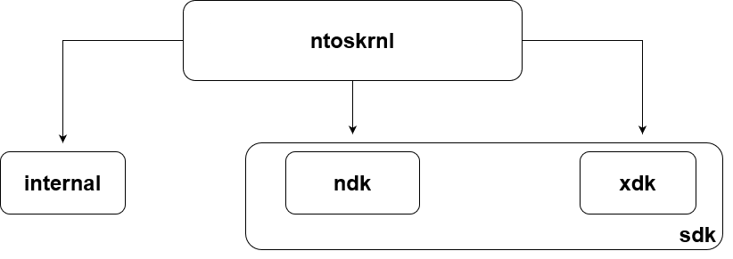The ReactOS' NT kernel bases upon a software development kit (SDK) and the internal directory. The internal directory serves as a place where all the underlying parts of the kernel shall be put there, with such parts not exposed to the outside world (or in other words, exported) other than the kernel itself. This includes internal data structures, functions, certain datatypes and whatnot. The SDK on the other hand serves as primary development kit where the kernel routines and data structures used outside of the kernel are so called public kernel APIs or exported APIs. The respective location of the SDK is here, the include directory specifically, whereas the internal directory of the kernel is here.
The NDK (Native Development Kit) in particular is the chunk of the SDK where it can be used outside of the kernel and that is the same for DDK (Driver Development Kit) as well although DDK is a separate topic for another article. XDK on the other hand is entirely ReactOS specific and a peculiar aspect of the XDK is that it plays a particular role, albeit a weird one. The XDK is a directory tree with bunch of low level stuff that are either in complete header structure or just templates. ReactOS, during the compilation process, takes whatever it is in the XDK input directory to the point of generating such data from XDK into the output directory as fully complete headers. The X from XDK has no meaning whatsoever and it's just used as a placeholder, just like how Microsoft decided with Zw prefix routines. The mechanism of XDK is used as such to reduce definition duplication throughout the SDK and undoubtedly, the DDK.
Now you may ask a question, if I want to implement a new function with some stuff for the kernel, in which place shall I put my prototypes and definitions? That entirely depends on what your goal is of course. If the purpose of such definitions is to be hidden from the public usage but used internally within the kernel then obviously you must put your stuff in the "internal" directory. If your stuff is used across different places like say, kernel mode drivers or across the Executive then you must put your stuff in the SDK, NDK specifically (or XDK too for that matter).
In this example I'll be going to declare a very simplistic internal function for the kernel itself, Ke. With that said, we'll be thoroughly jumping to the internal directory structure. The header that we're interested in is ke.h.
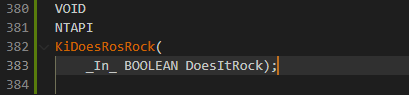
Since we won't be using it for serious development means, we'll just choose a silly name for the function KiDoesRosRock.
Now that we have our own prototype declared, the next step is to write the function. We'll take the krnlinit.c file as an example.
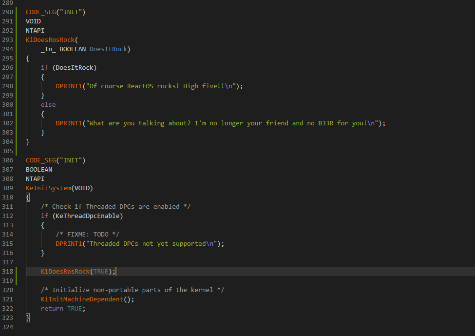
Assuming that you already know the NT datatypes and their purposes, I'll continue explaining some new parts of the code as you can see. Otherwise check my previous articles. CODE_SEG is a pragma macro where functions are stored in specific object files based upon the text section segment code.
Since we're dealing with kernel initialization code, INIT is the appropriate code text segment for that. You can check the documentation here regarding CODE_SEG. DPRINT1 is a specific ReactOS debug print macro
that outputs debug information to the debugger console terminal (e.g. from WinDBG) depending on the said information passed to the actual macro in question. You may have noticed another debug print macro but without the number, DPRINT. The difference between the two is that DPRINT only prints debug information if NDEBUG
definition is omitted (that is, commented out). NDEBUG stands for NO DEBUG and usually it's at the top of the code file. DPRINT1 on the other hand always prints debug output regardless of NDEBUG. Usually the DPRINT1 variant is used in particular cases like failure paths where some information has to be printed to the debugger.
Now it's time for another example, a little more nuanced. Let's consider MmAllocatePool. As usuall we'll introduce a prototype for the function and write its body code.
And the function.
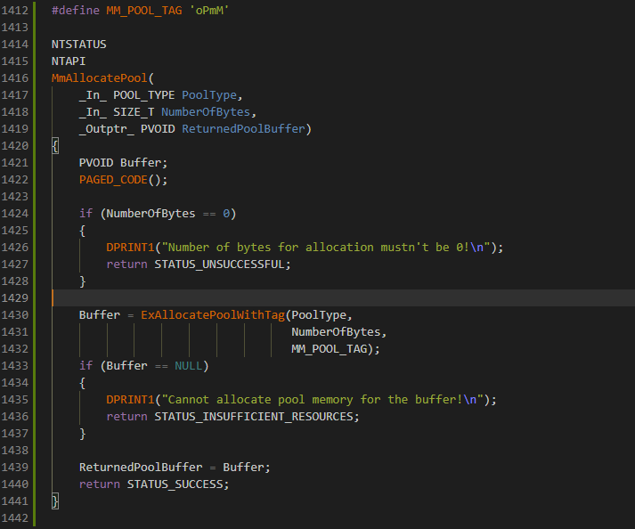
Still nothing spectacular here but you might notice some new stuff in the code. _Must_inspect_result_ is a function SAL annotation attribute that tells the compiler the caller must always inspect the result of the returned function, the said result being the returned value that is. If the result of the call is not checked, the compiler
raises a warning. For a list of function annotations, consult this article. _IRQL_requires_max_ on the other hand is a SAL IRQL annotation that tells the compiler at which maximum IRQL the function can work. So for example, if we annotate
the function as APC_LEVEL then that means this interrupt level is the maximum one and the routine can also take PASSIVE_LEVEL as well which is behind APC_LEVEL. In our MmAllocatePool we only want that PASSIVE_LEVEL should be the maximum interrupt request level to be allowed during the runtime execution of the function as there's nothing else before PASSIVE_LEVEL.
For a list of IRQL annotations, check this article. And finally, PAGED_CODE is nothing more other than a simple macro that checks if the current IRQL of the function of the calling thread is at PASSIVE_LEVEL. Since paging is not allowed above the IRQL threshold,
an assertion failure is raised if IRQL is above PASSIVE_LEVEL. Most of the kernel code is usually paged so usually you'd rather use this macro at the top of the function code after the variables declaration, unless you are implementing special or exceptional operations that require an interrupt request level above PASSIVE_LEVEL.
As I've said before, with the _Must_inspect_result_ annotation attribute defined to the function prototype, the caller is expected that the returned value must be checked. NT_SUCCESS is a macro that tests the expression wrapped in the parenthesis if the status code is a failure code. In this case, the condition tests if the status code is not STATUS_SUCCESS and if the condition is deemed as TRUE
the conditional body code is followed by clearing the bitmap and returning the status code to the caller.
Compiling the kernel is the same as compiling ReactOS using either RosBE or MSVC. Although as we'd want to debug the code interactively with WinDBG, we'll be going to use MSVC (Microsoft Visual C/C++ Compiler) here. As with MSVC, the general guideline of compiling the kernel is the same as compiling any component of the directory tree build. The general command is:
ninja ntoskrnl
Once the compilation process has finished with success, you should see a screen as follows, albeit the output may slightly differ.
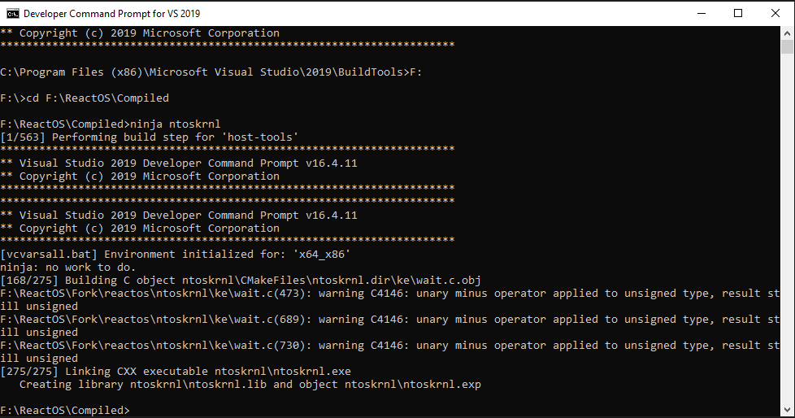Debugging is a fundamental process of analyzing your kernel code. As you are hacking the NT kernel of ReactOS which means you are directly touching the privileged and delicate part of an operating system, you're easily prone to fatal system crashes, inconsistent or downright abnormal behaviors, and even critical corruptions down to the kernel level that can seriously impact the system's stability. To ensure that your code works as it should and that it doesn't pose great impact to the kernel stability, debugging your kernel code is a top must. That is, you don't only spot potential bugs in your code but you also test the logic algorithm of your code from any ambiguity, observing the results if such results are what you wanted.
Debugging the ReactOS NT kernel compiled by MSVC, undoubtedly one would need two important things: 1) WinDBG and 2) PDB files. A PDB (Program Database) is a database file containing debug data information about a certain PE file (namely executables or dynamic link libraries a.k.a DLLs). The debug information in question is stored as in form of symbols with function names and their addresses pointing to the certain areas of the PE module. PDBs also contain data types and data structures, although such information is either fully or half stripped depending on the compilation configuration as PDBs are created upon compiling a module. In the case of ReactOS, PDBs come as complete database files with full debug data necessary for the debugger. Such PDBs can be found at msvc_pdb directory within the compiled ReactOS folder.
By default you get a compiled ReactOS 32-bit build therefore you have to use the 32-bit version of WinDBG. It's also possible to compile a 64-bit version of ReactOS and use the 64-bit WinDBG for debugging but we're going to focus solely on 32-bit since it doesn't make much of a big difference in debugging steps. Assuming that you've got WinDBG installed by now, launch WinDBG and you should be greeted with this screen.
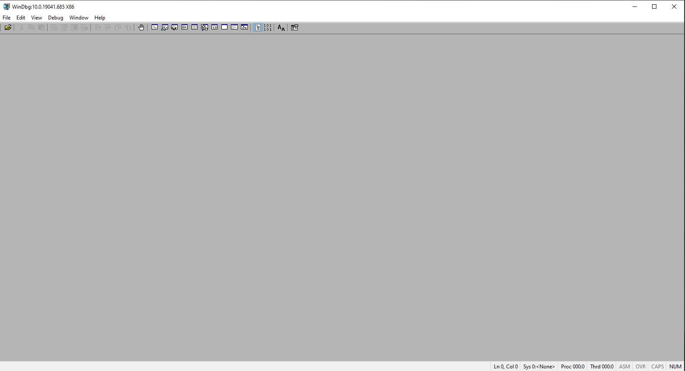Now the first step to start debugging is to actually set up our symbols path as WinDBG must understand where are the PDBs located. Without the PDBs debugging with WinDBG is literally useless. In order to set up the path, go to File > Symbol Search Path. For more information regarding path symbols, please check this article. An example of such path looks as follows, like mine:
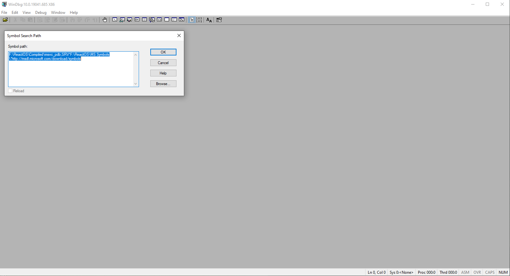The final step on starting debugging is to actually typing the defined pipe name which is used for communication between the VM and the debugger. Normally a named pipe path should look like as follows:
\\.\pipe\pipe_name
With pipe_name being the actual named pipe that you defined in the VM settings. To start debugging, go to File > Kernel Debug... and you should see a screen as follows:
Instead of connecting the debugger to a COM port, here we'll connect the debugger to a named pipe instead thus the Port field must be your named pipe path. Baud rate and Resets fields should be left as is. Pipe and Reconnect boxes must be ticked and finally debugging can be started with the OK button. Fire up your VM and choose ReactOS (Debug) in the FreeLoader boot options. The virtual machine will soon start to communicate with the debugger.
As both the debugger and VM communicate with each other, the Command terminal window will start to get populated with debug stuff from the machine itself. The screen should look as follows:
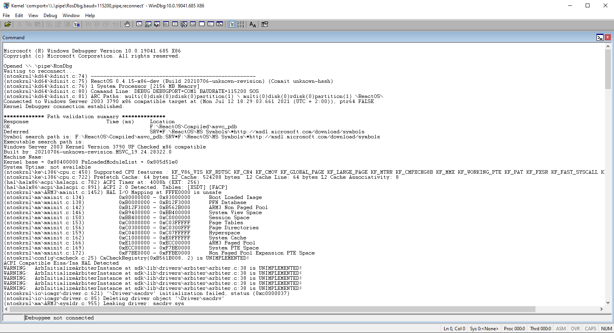Now the virtual machine can be debugged! To break the machine into the debugger you have to click Debug > Break. This will freeze the machine and the Command window should look as follows:
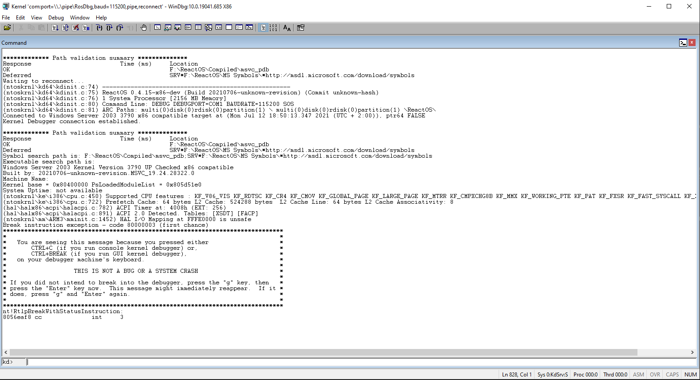Now you have total control of the machine. From that point you can set up breakpoints, execute instructions manually, alter the memory and whatnot. As part of "debugging your code" we'll be going to set up a breakpoint on a function.
Setting up a breakpoint means we're going to insert a hit point on a function. Once that point is hit that means we're currently calling that function and the debugger immediately stops the execution of the system on that function. Setting up a breakpoint is done by using the bm command. As follows:
The syntax of this command is pretty straightforward. In order to set up a breakpoint we have to specify the name of the module where the function resides. As we are debugging the kernel definitely the name of it is nt. The name after the exclamation point is the function. Basically, the syntax is like this:
module_name!function_name
Once you set up the breakpoint we have to continue with the execution of the system, to do that type the command g. This not only lets the system continue its operation but also you'll lose the control of the system until the system breaks onto that breakpoint. Once the system hits it, you should see a screen as follows:
At that right moment the system breaks into the debugger again and this time WinDBG will also spawn a new window automatically, the Source window. The window is used as such to display the source code of the specific part where the breakpoint was set based on the symbols from the PDBs.
A very nice and powerful feature of WinDBG is to interactively check the contents (actual values) behind the local variables of a function. To view the local variables you have to click View > Locals. A new window should appear like so:
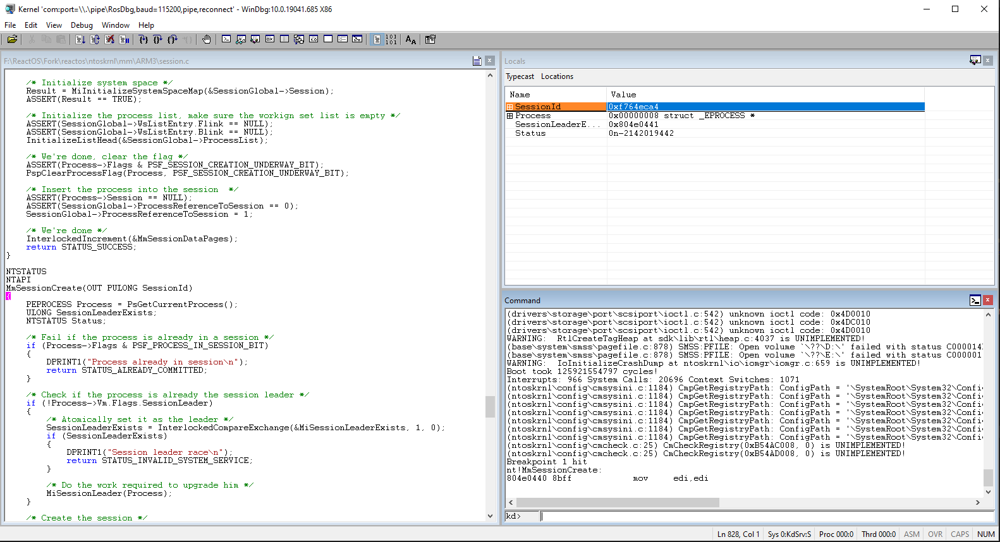The Locals windows gets populated once the system is into the debugger. From there you can view the values of the variables as well as the members' values of structures.
Alternatively from setting breakpoints with the command line, you can also set breakpoints visually in the Source window. What you have to do is to just click on whatever line you want to set up a breakpoint and then press F9. What will exactly happen is shown like in this screen:
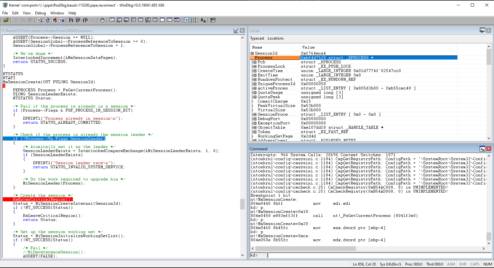
Some colors here, huh? The blue color as seen in Source window is where the current position of the instruction code line you are currently executing and red color is the breakpoint that's been set which it'll be triggered once you reach that line. Once we continue the execution again with the g command line, the system will break into
the debugger again on the new breakpoint as you can see. The pink color indicates the current breakpoint that's been hit just now.
When you're done with whatever investigations you had and you no longer need the breakpoints, you can clear them so that they won't be triggered anymore. To do so type the bl command and the screen should show up as follows:
The breakpoints can either be disabled or fully cleared by clicking on one of the current breakpoints in the list.
If you've reached this far then good job! You've learned some of the basics on the fundamentals of NT and especially how to write some code for the kernel. Although as you advance further on kernel development with time, some tips, considerations or remarks have to be taken into account during the course of your journey in the NT kernel. Here some of the things that you must consider as you write code for the kernel. The list may grow with further tips in the future when the time comes for it.
As the NT kernel was born more than 30 years ago, ReactOS follows a C89 coding style for the kernel. Following our coding style makes code cleaner and clearer to read and more importantly, documenting your code also makes it easier for other people to understand the core logic behind it. Check the coding style and programming guidelines articles.
Ensuring that your kernel code works as intended without bugs is an important task but sometimes certain conditions in code mustn't be met and if that ever happens, we're occuring in some form of inconsistency in the kernel that can further corrupt the system beyond data loss. If you believe that such inconsistencies or conditions can critically impact the system which such conditions it's not possible to do some recovery strategies, then as the last resort is to use
the KeBugCheckEx API call to bring down the system before critical corruptions will damage the system.
This generally applies for whatever function that returns a value upon its termination but most of the functions in the kernel usually return a NTSTATUS value of some form. And as such, these functions return useful information in case something fails or there requires attention by the caller.
The kernel offers various types of locking mechanisms, from spin locks, push locks, critical regions and to resources. The general rule is that each time you acquire a lock to do certain operations, you must RELEASE it back! Any mistake of not releasing a lock can bring inconsistencies in the kernel, further to the point of bugchecking the system. A great example of a bugcheck is APC_INDEX_MISMATCH where normal APCs (asynchronous procedure calls) are disabled within the current calling thread because someone has entered the critical region with KeEnterCriticalRegion but has forgotten to exit from such region with KeLeaveCriticalRegion.
Using ASSERT and similar ensures that you are evaluating the code from defects and that the predicate tested in question is always true. Consider this piece of code as follows:
What we're testing here is that Token should ALWAYS be a valid pointer to a token object in the memory address space of the kernel and that is properly initialized. This condition that is being tested here is like doing Token != NULL with such condition in question must TRUE.
If it ever happens that the condition in the assert is not met, hence the predicate is FALSE, then something's wrong with the caller who has called the function or the cause is even way deep down before the caller actually called the said routine. Using asserts in the kernel is highly recommended for such cases.
{kind=link}
{kind=link}
{kind=link}
{kind=link}
{kind=link}
{kind=link}
{kind=link}
{kind=link}
{kind=link}
{kind=link}
{kind=link}
{kind=link}
{kind=link}
{kind=link}
{kind=link}
{kind=link}
{kind=link}
{kind=link}
{kind=link}